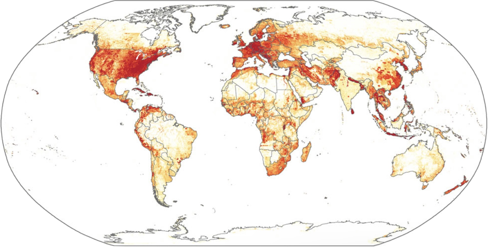

Home
Development
Contact
About Me
Matipa's Portfolio Website
Week 2
Alan Turing
Week 4
What is a web browser?
Week 6
Web Robots

Week 9
Towards a study of internet geographies
Week 12
UI/UX Critical Analysis
Week 14
Internet, Society and Design Justice